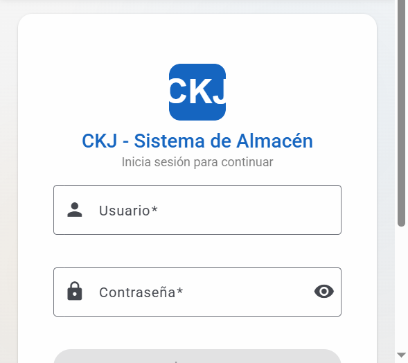
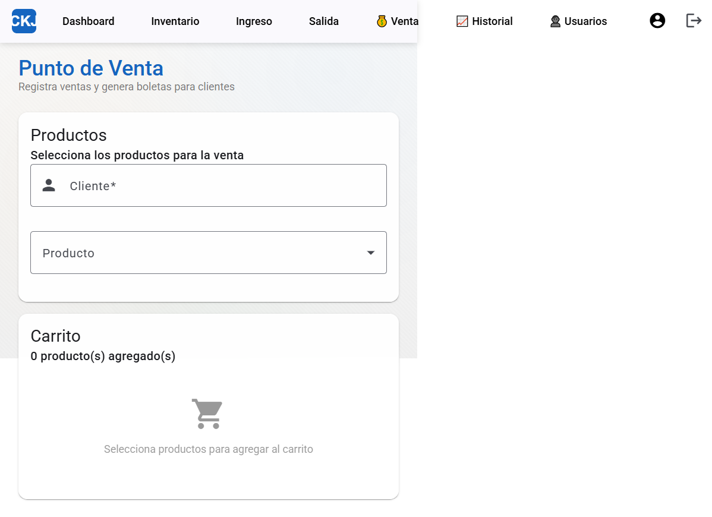
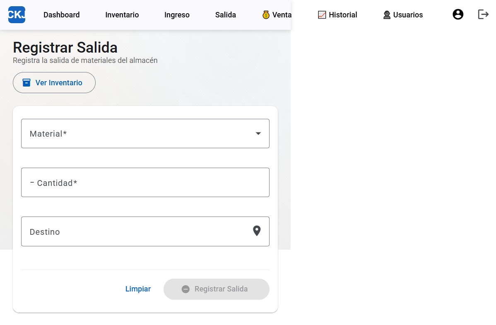
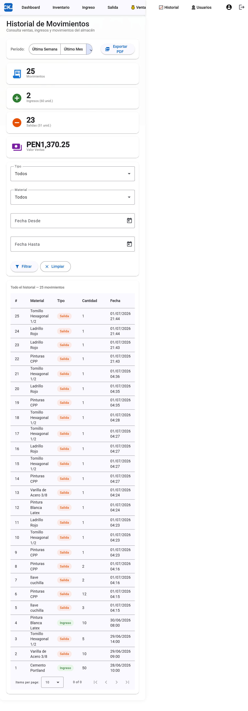

1. Introducción
Bienvenido al manual del Vendedor. Como usuario de VENTAS puedes realizar ventas a clientes, registrar salidas de materiales y consultar el inventario (solo lectura).
1.1 Credenciales de acceso
| Usuario | Contraseña | Rol |
|---|---|---|
ventas | ventas123 | Vendedor |

Pantalla de inicio de sesión del sistema
1.2 Funciones que SÍ puedes realizar
- ✅ Realizar ventas a clientes
- ✅ Registrar salidas de materiales
- ✅ Consultar inventario (solo lectura)
- ✅ Ver Dashboard y Reportes
- ✅ Exportar reportes a PDF
1.3 Funciones NO disponibles para ti
- ❌ Agregar, editar o eliminar materiales
- ❌ Registrar ingresos de materiales
- ❌ Gestionar usuarios del sistema
- ❌ Ajustar stock
2. Acceso al Sistema
Para ingresar al sistema, abre tu navegador y ve a la dirección del servidor. Verás la pantalla de inicio de sesión.
Pasos para iniciar sesión
3. Dashboard (Panel Principal)
El Dashboard es la pantalla que ves al iniciar sesión. Muestra un resumen del estado del almacén.
| Indicador | Descripción |
|---|---|
| 📦 Materiales | Total de materiales registrados |
| 📊 Total en Stock | Suma de todas las cantidades en inventario |
| 💰 Valor Total | Valor monetario del inventario |
| ⚠️ Stock Bajo | Materiales por debajo del stock mínimo |
| 📥 Ingresos / 📤 Salidas Hoy | Movimientos registrados el día de hoy |

Dashboard principal con 51 materiales registrados
5. Punto de Venta
El módulo de VENTAS es tu herramienta principal. Aquí registras las ventas a clientes.

Módulo de punto de venta con carrito de compras
6. Registrar Salida
Como VENTAS puedes registrar salidas de materiales del almacén.

Formulario para registrar salida de materiales
7. Inventario (Solo Consulta)
Usa el inventario para:
- ✅ Consultar el stock disponible antes de una venta
- ✅ Verificar precios de los productos
- ✅ Revisar la ubicación de los materiales
8. Historial y Reportes
Puedes consultar los movimientos y exportar reportes a PDF.
Filtros disponibles
- Período: Esta semana, Este mes, Todo
- Tipo: Ingreso, Salida, Todos
Exportar a PDF

Historial de movimientos con filtros y exportación PDF
9. Resumen de Permisos - VENTAS
| Función | Acceso |
|---|---|
| Ver Dashboard | ✅ SI |
| Ver Inventario | 👁️ SI (solo lectura) |
| Buscar materiales | ✅ SI |
| Agregar materiales | ❌ NO |
| Editar materiales | ❌ NO |
| Eliminar materiales | ❌ NO |
| Registrar Ingreso | ❌ NO |
| Registrar Salida | ✅ SI |
| Realizar Ventas | ✅ SI |
| Ver Reportes | ✅ SI |
| Exportar PDF | ✅ SI |
| Gestionar Usuarios | ❌ NO |
| Ajustar Stock | ❌ NO |
Lo que NO puedes hacer como VENTAS
- ❌ Agregar, editar o eliminar materiales
- ❌ Registrar ingresos de materiales
- ❌ Gestionar usuarios
- ❌ Ajustar stock
10. Solución de Problemas
❌ No puedo iniciar sesión
- Verifica tu usuario ventas y contraseña ventas123
- Si tu cuenta fue desactivada, contacta al Administrador
❌ No encuentro la opción Ingreso
- Es correcto, los vendedores no pueden registrar ingresos
❌ Error al vender
- Verifica que haya stock suficiente del producto
- Asegúrate de seleccionar un producto antes de finalizar
❌ No puedo agregar materiales
- Es normal, solo puedes ver el inventario, no modificarlo